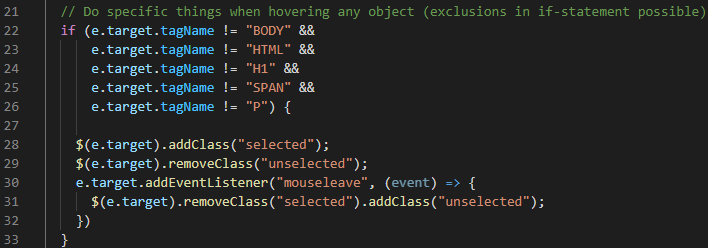
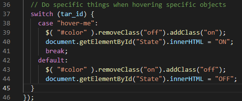

Mouse Tracking
Deze pagina bevatten enkele demo's van wat er allemaal mogelijk is met het mousemove-event van jQuery.
Algemeen
Alle div's deze pagina gehoverd worden, kleuren blauw en vergroten.

Tracking mouse - examples > jQuery.js
Een voorgedefinieerde div selecteren en luisteren naar events

Tracking mouse - examples -> jQuery.js
Card #1
Hieronder een 'switch' die toggelt als de mousemove-variabele 'hover-me' is.
Card #2
Deze hover-me verandert de class van de switch onder card #1 van 'off' naar 'on' en verandert wat tekst.